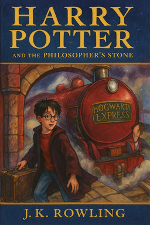

Harry Potter and the Philosphers Stone
Back to Hogwarts  The narrow path had opened suddenly onto the edge of a great black lake. Perched atop a high mountain on the other side, its windows sparkling in the starry sky, was a vast castle with many turrets and towers. “No more’n four to a boat!” Hagrid called, pointing to a fleet of little boats sitting in the water by the shore. Harry and Ron were followed into their boat by Neville and Hermione. “Everyone in?” shouted Hagrid, who had a boat to himself. “Right then — FORWARD!”And the fleet of little boats moved off all at once, gliding across the lake, which was as smooth as glass. Everyone was silent, staring up at the great castle overhead. It towered over them as they sailed nearer and nearer to the cliff on which it stood. “Heads down!” yelled Hagrid as the first boats reached the cliff; they all bent their heads and the little boats carried them through a curtain of ivy that hid a wide opening in the cliff face. They were carried along a dark tunnel, which seemed to be taking them right underneath the castle, until they reached a kind of underground harbour, where they clambered out onto rocks and pebbles. “Oy, you there! Is this your toad?” said Hagrid, who was checking the boats as people climbed out of them. “Trevor!” cried Neville blissfully, holding out his hands.Then they clambered up a passageway in the rock after Hagrid’s lamp, coming out at last onto smooth, damp grass right in the shadow of the castle. They walked up a flight of stone steps and crowded around the huge, oak front door. “Everyone here? You there, still got your toad?” Hagrid raised a gigantic fist and knocked three times on the castle door.
Summary
The story begins with the mysterious arrival of a baby, Harry Potter, at the doorstep of his cruel aunt and uncle, the Dursleys, after his parents, James and Lily Potter, are killed by the dark wizard Lord Voldemort. Voldemort’s killing curse, meant for baby Harry, mysteriously rebounds, destroying Voldemort instead and leaving Harry with a lightning-shaped scar on his forehead. Harry becomes famous in the wizarding world as "The Boy Who Lived." Harry grows up unloved and mistreated by the Dursleys and their spoiled son Dudley. On his 11th birthday, Harry receives a letter (despite the Dursleys’ attempts to stop it) informing him that he is a wizard and has been accepted into Hogwarts School of Witchcraft and Wizardry. The giant Hagrid personally delivers the letter and takes Harry shopping for school supplies in Diagon Alley, where Harry also learns about his fame. On the train to Hogwarts, Harry befriends Ron Weasley and Hermione Granger. He also meets Draco Malfoy, who offers friendship but reveals his arrogance and prejudice, which Harry rejects. At Hogwarts, students are sorted into houses by the magical Sorting Hat — Harry, Ron, and Hermione are all placed in Gryffindor, while Malfoy joins Slytherin. Harry quickly becomes embroiled in the mysteries of Hogwarts. He discovers that a hidden object — the Philosopher’s Stone — is being protected at the school. The stone, created by Nicolas Flamel, grants immortality through the Elixir of Life and can turn any metal into pure gold. It becomes clear that someone is trying to steal it. Harry excels at Quidditch, becoming the youngest Seeker in a century. Meanwhile, he, Ron, and Hermione discover that a three-headed dog named Fluffy guards a trapdoor leading to the Stone. They suspect the sinister Professor Snape of trying to steal it, though the stuttering Professor Quirrell seems harmless. Throughout the year, the trio faces challenges: Hermione’s quick thinking saves them from a deadly plant (Devil’s Snare), Harry’s flying skills help them retrieve a key, and Ron’s talent at wizard chess allows them to advance through the enchantments protecting the Stone. In the climactic confrontation, Harry finds that it was Quirrell, not Snape, who sought the Stone. Quirrell is possessed by Voldemort’s spirit, who has survived in a weakened form and hopes to return to full power using the Stone. But when Quirrell tries to seize Harry, he burns at Harry’s touch — Harry’s mother’s sacrificial love protects him. The Stone is ultimately destroyed by Dumbledore and Flamel to prevent it from falling into the wrong hands. At the end of the school year, Gryffindor wins the House Cup, thanks to the bravery of Harry, Ron, Hermione, and Neville Longbottom. Harry returns to the Dursleys for the summer, knowing he now has a place where he belongs.
back to top